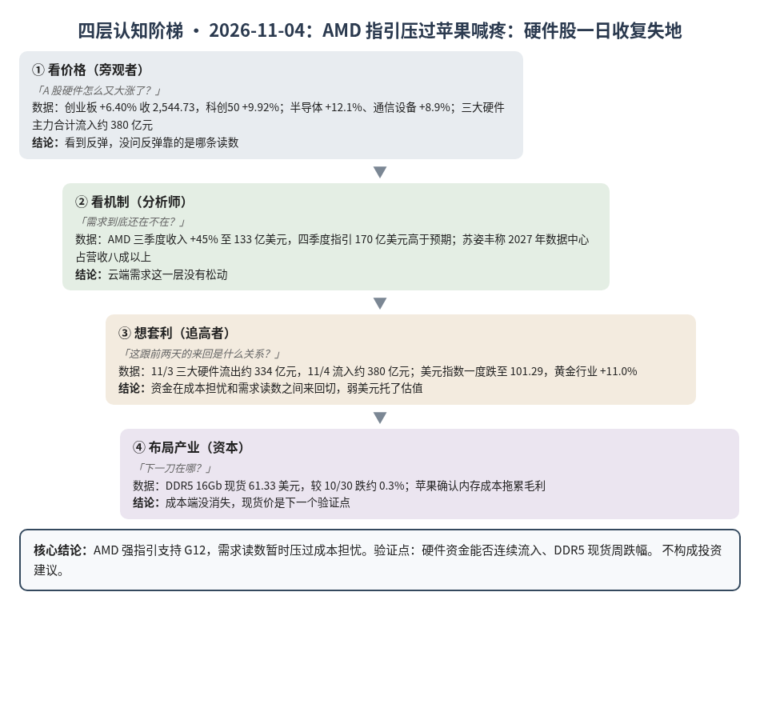
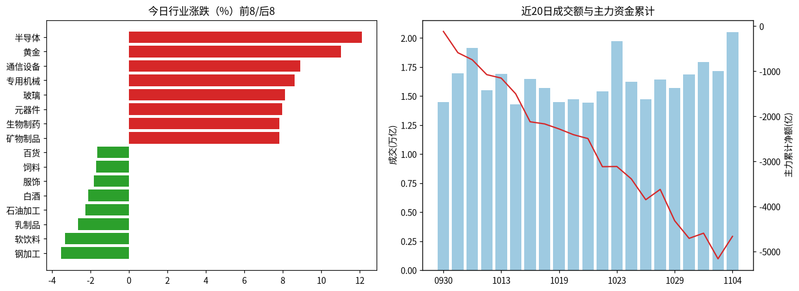
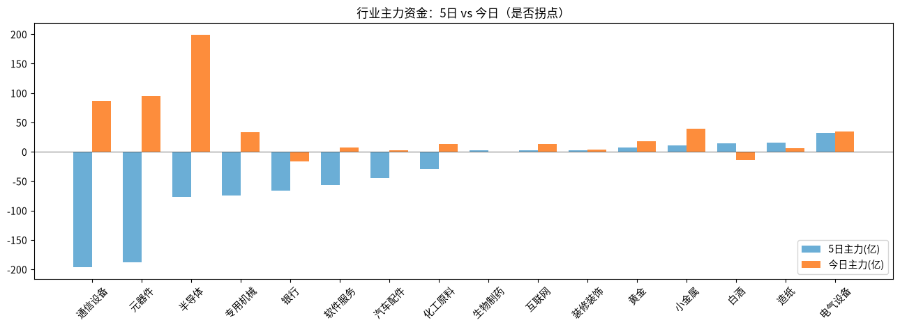

A股投研日报 · 2026-11-04（四层认知版）
- 主线
- AMD 指引超预期叠加美元走弱，A 股硬件午后暴力反弹，一天收复两天跌幅
- 最重要变化点
- 创业板 +6.40% 收 2,544.73、科创50 +9.92%；半导体、元器件、通信设备主力合计流入约 380 亿元
- 机制含义
- 需求端读数（AMD 数据中心）压过成本端担忧（苹果毛利），资金从"怕涨价伤需求"切回"需求还在"
- 下一个观察点
- 11/5 三大硬件主力能否连续第二日净流入；11/6 DDR5 16Gb 现货较 10/30 跌超 3%（低于 59.66 美元）
本报告为基于公开数据的研究分析，不构成投资建议。
今日市场概况
数据管道速览（Tushare 收盘数据，规则生成，正文判断见下文）
- 指数：上证指数 +2.16% 收 3,686.17，创业板指 +6.40% 收 2,544.73；深证成指 +4.22%、科创50 +9.92%、上证50 +1.45%、沪深300 +2.31%、中证500 +4.66%、中证1000 +4.67%（Tushare）。
- 量能与宽度：成交 20,519 亿元（20 日均 16,464 亿元）；上涨 4,667 家 / 下跌 779 家，上涨占比 83.8%，个股中位数 +1.9%。
- 主力资金：全 A 主力 +497.2 亿元，连续第 1 日净流入。
- 行业：主力流入居前 半导体（+199.0 亿）、元器件（+95.1 亿）、通信设备（+86.0 亿）；流出居前 银行（-16.0 亿）、白酒（-14.2 亿）、石油开采（-9.0 亿）。
- 龙虎榜 / 北向：机构专用席位合计 +3.42 亿元；沪深股通成交前五 中际旭创、新易盛、宁德时代、东山精密、贵州茅台（成交额≠净买入）。
变化点
方法：四层认知阶梯 + 历史周期律。数据 Tushare（见附录）。不构成投资建议。
一、世界观定位
阶段不变，回退条件不变。楚汉层：央行把股票回购增持再贷款扩到 5 家系统重要性城商行（源），托底工具继续加码。世界指标今日更新未跑完，五盏灯沿用 11/02 读数（3 黄 2 红：估值、中国信用）。
二、变化一（主变化）：AMD 给出强指引，硬件股一日收复失地
- 看价格：创业板 +6.40% 收 2,544.73，收回 2,413；科创50 +9.92%；半导体 +12.1%、通信设备 +8.9%、元器件 +8.0%。成交 20,519 亿元，上涨占比 83.8%，全 A 主力 +497.2 亿元。早盘三大指数涨跌不一，涨幅集中在午后。
- 看机制：AMD 三季度收入同比 +45% 至 133 亿美元，四季度收入指引 170 亿美元，高于里昂预期的 160 亿（源）；苏姿丰称 2027 年数据中心将占总营收 80% 以上，需求"非常强劲"（源）。
- 想套利：昨天三大硬件合计流出约 334 亿元，今天合计流入约 380 亿元——两天来回，说明仓位在"成本怕"和"需求强"之间来回切。推断午后集中拉升没有找到单条触发消息，更像 AMD 指引、美元走弱与托底资金共同作用。
- 布局产业：AMD 的读数和昨天中际旭创"大客户未砍单"一致，云端需求这一层（G12、G25）没有松动迹象。
判断：昨天设的"AMD 指引转弱"分支没有发生，反向读数支持 G12。漏洞：苹果喊疼的成本问题没消失，DDR5 现货仍是下一刀。
三、变化二：美元走弱，贵金属午后爆发
美国中期选举民主党预计拿下参众两院（源），美元指数一度跌近 0.6% 至 101.29，创一个月新低（源）。现货黄金突破 4,010 美元，日内 +2.03%（源）；A 股黄金行业 +11.0%，主力 +18.4 亿元。世界黄金协会称三季度全球央行净增黄金储备 321 吨（源）。
判断：弱美元同时托了金价和成长股估值，但这是政治事件驱动，持续性要看美元能否继续走低。
四、上一交易日验证点回顾（11/3 → 11/4）
| 验证点 | 结果 |
|---|---|
| 创业板守住 2,350 / 收回 2,413 | 命中上行分支：+6.40% 收 2,544.73，昨日像恐慌盘 |
| 三大硬件主力流出收窄到 100 亿元内 | 命中：转为合计流入约 380 亿元 |
| AMD 指引弱于预期 | 未命中：四季度指引 170 亿美元，高于预期 |
| 11/5 前 DDR5 现货周跌超 3% | 待验证：世界指标读数 61.33 美元，较 10/30 跌约 0.3% |
五、供应链风险敞口（人工复核版）
脚本版见 risk_section_20261104.md。口径为 GB300/NVL72 当量柜年化系统价值；Δ$ 为事件类型假设模板，仅用于排序，非预测。脚本 2 条，误匹配 2 条（宏和特种电子纱为扩产；中际旭创为需求确认，均非断供）。复核后有效断供 Δ$≈0，基线维持年化 EL 57.7 亿美元（10/21）。采集降级：GDELT 限流，巨潮公告匹配未恢复。
六、机会表（产业/环节层面，不构成投资建议）
| 环节 | 逻辑 | 证伪条件 |
|---|---|---|
| 数据中心算力（CPU/GPU） | AMD 称 2027 年数据中心占营收八成以上 | 云厂商下修 2027 年资本开支 |
| 半导体设备 | 今日领涨，国产扩产链条受益于需求预期回暖 | 存储原厂放缓扩产或现货价连跌 |
| 贵金属 | 美元走弱、央行持续增持 | 美元指数收回 102 以上 |
中长期展望（3–12 个月与 2027）
3–12 个月：AMD 与光模块龙头读数都支持云端需求（G12、G25），但涨价反作用已传到终端，硬件股会在两种叙事间大幅摆动；估值灯仍红。
2027：G02（涨价靠晶圆机会成本）读数支持；G01 仍受挑战，等 John 复核。总闸门仍是 P023（概率 0.55）。
什么会改变展望：①DDR5 现货单周跌超 3%；②任一大云厂商下修资本开支；③美元指数快速收回 102 以上。
七、明日/本周验证点（可证伪）
- 11/5 创业板能否守住 2,500：守住则反弹有延续，跌破则仍是来回震荡。
- 11/5 三大硬件行业主力连续第二日净流入（合计 > 0）。
- 11/6 DDR5 16Gb 现货较 10/30 跌超 3%（低于 59.66 美元）。
- 本周美元指数是否跌破 101。

一句话总结：AMD 指引超预期叠加美元走弱，A 股硬件午后暴力反弹，一天收复两天跌幅。
本报告为基于公开数据的研究分析，不构成任何投资建议。
附录：市场数据（证据底稿）


| 收盘 | 今日% | 5日% | 20日% | MA20 | 成交(亿) | |
|---|---|---|---|---|---|---|
| 上证指数 | 3,686.17 | 2.16 | 0.13 | -4.06 | 3,707.63 | 9,532.65 |
| 深证成指 | 11,335.69 | 4.22 | -1.20 | -12.04 | 11,676.70 | 5,791.75 |
| 创业板指 | 2,544.73 | 6.40 | -3.42 | -18.84 | 2,700.66 | 2,430.42 |
| 科创50 | 1,265.47 | 9.92 | -1.36 | -17.29 | 1,319.28 | 1,045.20 |
| 上证50 | 2,808.54 | 1.45 | 2.02 | -0.52 | 2,771.63 | 1,740.39 |
| 沪深300 | 4,101.34 | 2.31 | 0.43 | -5.88 | 4,135.86 | 5,972.60 |
| 中证500 | 6,622.03 | 4.66 | -0.28 | -10.94 | 6,755.31 | 3,648.81 |
| 中证1000 | 6,511.81 | 4.67 | -1.01 | -10.78 | 6,670.08 | 4,043.95 |
行业资金热力（按5日主力净额排序，前8/后8）
| industry | 今日% | 5日% | 20日% | 今日主力(亿) | 5日主力(亿) | 资金连续天数 |
|---|---|---|---|---|---|---|
| 电气设备 | 4.5 | 4.8 | -4.3 | 34.7 | 32.0 | 3.0 |
| 造纸 | 3.9 | 4.2 | -2.8 | 6.2 | 15.0 | 3.0 |
| 白酒 | -2.1 | 10.1 | 16.2 | -14.2 | 13.7 | -1.0 |
| 小金属 | 5.8 | 2.9 | 37.0 | 39.5 | 10.8 | 1.0 |
| 黄金 | 11.0 | 1.9 | -6.6 | 18.4 | 6.9 | 2.0 |
| 装修装饰 | 6.7 | 4.3 | 2.0 | 3.4 | 2.7 | 3.0 |
| 互联网 | 4.3 | 2.7 | 5.2 | 13.3 | 2.7 | 1.0 |
| 生物制药 | 7.8 | 3.7 | -7.9 | 0.2 | 2.5 | 1.0 |
| 通信设备 | 8.9 | -15.1 | -29.5 | 86.0 | -196.2 | 1.0 |
| 元器件 | 8.0 | -6.7 | -22.7 | 95.1 | -188.6 | 1.0 |
| 半导体 | 12.1 | -2.3 | -14.8 | 199.0 | -77.1 | 1.0 |
| 专用机械 | 8.6 | -3.3 | -10.7 | 32.8 | -74.5 | 1.0 |
| 银行 | -0.8 | 0.5 | 4.8 | -16.0 | -65.6 | -5.0 |
| 软件服务 | 4.6 | 1.1 | 4.1 | 7.7 | -56.6 | 1.0 |
| 汽车配件 | 3.8 | -2.8 | 4.5 | 2.0 | -44.9 | 1.0 |
| 化工原料 | 5.3 | -0.3 | -7.8 | 13.0 | -29.5 | 1.0 |
市场情绪时间序列（近10日）
| trade_date | 成交(亿) | 上涨占比% | 主力净额(亿) | 个股中位涨跌% |
|---|---|---|---|---|
| 20261022 | 15418.6 | 9.6 | -623.7 | -2.5 |
| 20261023 | 19728.5 | 81.2 | 4.3 | 1.6 |
| 20261026 | 16230.9 | 40.4 | -274.6 | -0.5 |
| 20261027 | 14729.0 | 10.9 | -462.7 | -3.0 |
| 20261028 | 16421.0 | 74.6 | 229.2 | 1.3 |
| 20261029 | 15707.1 | 14.0 | -694.9 | -2.6 |
| 20261030 | 16877.1 | 16.0 | -391.8 | -3.1 |
| 20261102 | 17951.9 | 84.0 | 114.9 | 2.0 |
| 20261103 | 17150.9 | 37.8 | -568.2 | -0.7 |
| 20261104 | 20518.9 | 83.8 | 497.2 | 1.9 |
今日上涨4667家/下跌779家，涨幅≥9.8% 365家、跌幅≤-9.8% 16家¹。
龙虎榜侧写：机构专用席位合计 +3.42 亿；净买入居前 移远通信(+7.67亿)、拓荆科技(+5.81亿)、银之杰(+5.23亿)，净卖出居前 东山精密(-15.98亿)、果麦文化(-1.93亿)、金海通(-1.68亿)。 沪深股通活跃股：成交前五为中际旭创、新易盛、宁德时代、东山精密、贵州茅台（成交额≠净买入）。
注：¹涨跌停为按±9.8%阈值近似（limit_list_d无权限）。²行业为Tushare stock_basic分类自行聚合（sw_daily/ths_daily/行业资金流接口无权限），成交加权、剔除N/C新股，成分≥8只。³主力=大单+特大单净额（moneyflow）。⁴2024年8月起北向每日净买入停止披露，moneyflow_hsgt/hsgt_top10数值为成交口径，不可解读为净流入。⁵新闻/公告接口无权限，改用新浪财经7x24公开快讯自动抓取+人工补充。
接口状态：trade_cal:OK；stock_basic:OK；index_daily:OK；moneyflow_hsgt:OK；hsgt_top10:OK；top_list:OK；top_inst:OK；index_dailybasic:OK；新浪7x24(公开):OK 3395条（11-03 14:15 起）